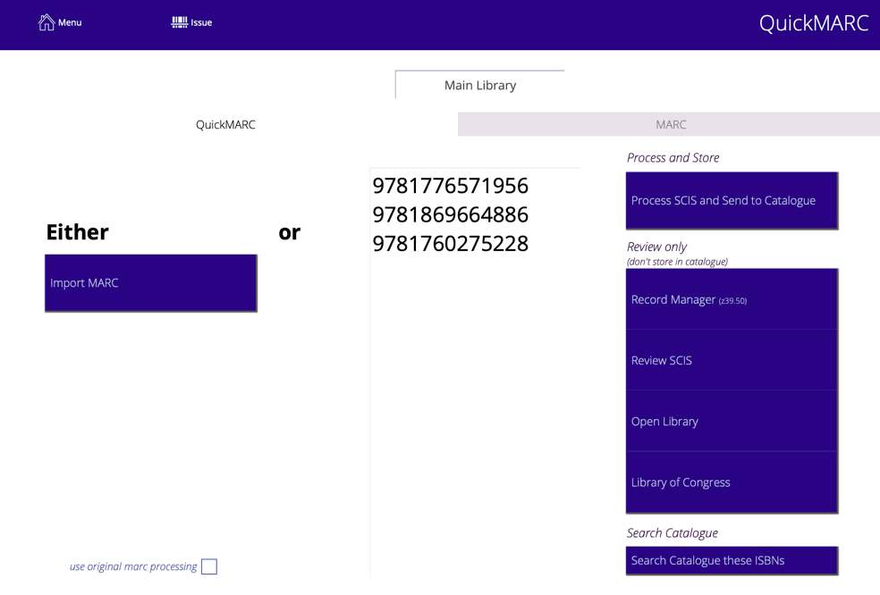

Catalogue
The catalogue is a collective term referring to the collection of "things" you track, which includes the physical items in your library and entries referring to non-physical resources (such as links to resources on the internet).
The word "catalogue" can refer to a list of items or the collection in general. The terms "catalogue", "title" and "copy" are sometimes used interchangeably, though we try to be clear which we mean when necessary.
Exposed Title/Copy catalogue structure
The catalogue consists of titles and copies. For example, you may have 7 copies of the 1 title "Harry Potter And The Order Of The Phoenix". The library administrator can also catalogue information, such as relevant web links and keep no copies.
Individual copies of a particular title may have their own issue restrictions (not for issue, restricted issue period, restricted to particular types, etc.). Also, all copies of a particular title do not have to belong to a single library.
Searching is by title by default, and you can search copies via the title views or the explicit copy views.
When you press the "c" single-key shortcut (to go to the catalogue) you can configure Athenaeum to go to either the Copies list or to the Title list view.
- Titles
- the entries in the main catalogue, such as the name of a book, DVD or URL
- each title stores the bibliographic information (title, series, type, genre, isbn, publisher, subjects, keywords, etc.) for the title plus related information such as the "library" the title is associated with; privilege when issuing any copies belonging to the title and so on
- default issue restrictions that apply to each copy
- Copies
- each "instance" of a title; for example, you may have 6 COPIES of the 1 TITLE "Harry Potter And The Order Of The Phoenix"
- each copy stores information such as bar code, location, purchase detail and special issue rules (fixed issue period, maximum issue period, not for issue, issue messages, etc.)
- you do not have to have any copies for a particular title (e.g. the title refers to a URL)
- individual copies may have their own issue restrictions different from other copies of the same title (not for issue, restricted issue period, restricted to particular types, etc.)
- Archive
- the archive is where copies go when you dispose of them.
- items are rarely "deleted" because we usually want to keep a record of the copy in case it returns to the library and for historical analysis
- the structure of the Archive table mirrors the Copies table however it is separate. There is also a corresponding Title Archive behind the scenes, though this is not currently exposed.
Navigating
You can navigate to the "catalogue" by either:
- clicking the Catalogue button on the main menu (if you have configured this to show)
- clicking the Title button on the main menu (if you have configured this to show)
- clicking the Copy button on the main menu (if you have configured this to show)
- pressing the single key shortcut "c"1
- pressing the single key shortcut "t"2
- pressing the single key shortcut "p"
Catalogue list
When you navigate to the catalogue list(s) you will see either of these screens:
Note that catalogue views use various shades in the red spectrum in the header part as a visual clue to where you are in Athenaeum. The title views have a burgundy red, the Copy views use a burnt orangey red and the archive uses a deep claret (almost purple) red.
The coloured header across the top has various functions appropriate to the viewed module.
The column headers indicate the names of the fields below and in many cases, clicking the header will sort the current list by that column.
Catalogue Detail
As with other list views, clicking a row in the list view will show detail for the row that you clicked.
Title Detail
The title detail screen shows information about the current title as well as a scrollable listing of copy information attached to the title.
Note that you can also access the detail of each copy by clicking the "detail" icon to the right of each copy row to reveal a pop-over window
Title Header buttons
The buttons in the header across the top are:
- previous/next navigation
- current record of found set indicator
- main menu button
- detail find button
- return to title list view
- issue menu to access issue functions
- reserve button allows the administrator to add an ad-hoc reserve to the title
- send to blog will add a new entry to the librarian's blog highlighting the current title, attempting to include the cover graphic
- If there are no copies attached to the Title, a "Delete" button is visible
Notable Title Fields
Please refer to Appendix A: fields for details of each field.
Some important fields are:-
- title
- the title of the catalogue entry
- author
- the main author(s) of the title
- other authors
- other contributors to the title
- you can change the label for this field in admin->customisation-catalogue
privilege when issuing4
Title Detail Tab Controls
- detail
- The main detail screen with the most used fields visible in one place
- subjects
- the subjects and keywords fields expanded to fill the available space
- title notes
- the notes attached to the title (these are searchable by library patrons)
- custom fields attached to the title (custom 1 and 2 are searchable by library patrons)
- issue message (title) - a message that is displayed when any copies attached to the title is issued
- return message (title) - a message that is displayed when any copies attached to the title is title
- x copies
- a larger view with more detail of the copies that are attached to the title
- x reserves
- a list of reserves of the title, including who reserved and when
- note clicking the "list reserves" button will show those reserves in a full list view
- you (the administrator) can delete a reserve by clicking the cross at the right of the reserve detail
- x reviews
- a list of reviews of the current title
- you can quickly authorise reviews
- clicking the "list reviews" button shows you those reviews in a list view where you can more easily edit, authorise and delete reviews
- history
- lists the issue history for all copies of the title
- shows a count of issue history
- web
- a simplified preview of any link you wish to enter, the link stored in the URL field, including links that can be generated from formula3 that might include the ISBN and so on.
- periodical/audit
- shows any periodical settings for this title
- shows "audit" information (i.e. "under the hood" information about the title) such as when the record was created and modified, the number of related information
Should I view Titles or Copies?
This depends upon what you want to do.
Most library administrators will prefer to work mostly with the Copies view, as they are possibly more likely to be handling individual copies with in their library.
However, you can do many things in both views. The content of the Title and Copy views overlap so that you can do many tasks from either context, when it makes sense. This is a deliberate design decision. For example, if you are searching for a bar code, you can enter the bar code into the quick search widget at the top right of either Title or Copy list views and you will find the appropriate entry.
Some catalogue reports can be generated from either view and some are specific.
Setting Default view
Go to Admin->Customisation->Catalogue Defaults and set your preferred behavior:
- catalogue view determines which view (title/copy) you see when you click "catalogue" on the main menu
- "c" shortcut controls the single key shortcut behaviour
- "t" shortcut does similar, allowing you to choose old Athenaeum Pro "t" behaviour, if you want.
Copy Detail
Clicking a row in the copy list view will show detail for the row that you clicked:
The detail screen shows information pertinent to the copy you are viewing as well as relevant detail from the title.
The screen shot below shows to the copy fields highlighted and the title fields greyed:
Editing the copy fields will change the information for the current copy. Editing the Title fields on this screen will change the information for all copies of that title.
Copy Header buttons
The buttons in the header across the top are:
- previous/next navigation
- current record of found set indicator
- main menu button
- detail find button
- return to copy list view
- issue menu to access issue functions
- reserve button to add a reserve to the title
- send to blog to add a blog entry for the current title
- show title switches to the Title detail view
Notable Copy Fields
Please refer to Appendix A: fields for details of each field.
The main fields of interest are:
- copy number
- an integer number that might be assigned to the different copies of a title - for example, you might have 10 chromebooks attached to a title entry - assigning the numbers 1 to 10 can be simpler for patrons than dealing with the bar `
- bar code
- the unique string assigned to items used during the issue/return process (it is possible to search for copies without the bar code during these processes, but much quicker and more accurate to use a scanner with bar codes)
- date purchase
- when the item was acquired and added to the catalogue (used in depreciation calcuations)
- paid
- the amount actually paid for the copy
- unpaid
- the amount of any discount you may have received
- total
- paid + unpaid amounts
- replace
- the amount shown to borrowers indicating the replacement cost of the item - is not necessarily related to paid or unpaid
- colour
- a named colour assigned to the copy (e.g. the colour of a spine label sticker on the physical copy) - find a list of colours at https://librarysoftware.co.nz/pages/colours.html
- container (e.g. image):
- containers can hold images, files, spreadsheets, movies, etc. - containers (images) are normally attached to the title, however copies might have a different container stored when you store an image or document against the copy, Athenaeum will attempt to store it with the title, if there is already an image or document with the title, then the new container is stored against the copy
- copy notes
- you can have detailed notes for each copy separate to the title's notes e.g. the title might have a note "suitable for mature reading" and a copy might have "page 37 is missing"
Copy Detail Tab Controls
The tabs visible on the copy detail view are:
- detail
- the main detail for the copy
- subjects, keywords
- a larger view of the subjects and keywords stored against the title
- notes
- a larger view of the notes for the copy, issue and return messages for the copy as well as title custom fields
- container
- a larger view of the "container" for the title/copy (if there is no copy container, the title container is shown)
- collection
- a tab for managing associated items normally issued together - note this item is only for compatibility with older configurations and is deprecated
- reserves
- a view of all reserves for the current title, if any
- reviews
- a view of all reviews for the current title, if any
- history
- the list of issues for the current copy
- url
- a web preview of the link stored in the URL (title) field
- web
- calculated web previews based on information from the current copy/title
Catalogue Reports
Reporting techniques are covered in the reporting, so please cross reference with that chapter.
A brief list of reports available in the list views is below. These reports assume that you have already found the set of records that you wish to report upon.
Title Print
- previews and prints the current list of titles in the current sort order
- Print by Title
- prints the current list, sorted by title
- Print by author
- prints current list of titles, grouping each title together by author
- Print by privilege
- prints the list of titles grouped by the issue privilege you have assigned each title (if any)
- Save list to Excel
- saves the title information to an excel spreadsheet in the currently sorted order. The columns output are title, author, author_other, dewey, call_number, type, content_type, carrier, ISBN, series, genre, publisher, publish_location, publish_year, account_code, subscription_expiry, url note that custom labels are not output, rather the raw field names such as author_other_
- Annual Summary
- report summarising movements and totals for the year, optionally by Library
- Yearly Spend
- a comparison report summarising each year's spend, optionally per library
- Supplier Summary
- prints a breakdown of the copies for the found set of titles by supplier (this report can be generated from the Copies context on subsets of items)
Allows you to define a custom export details for the found set of TITLES, in tab delimited, csv, DBF, word "merge", HTML table, XML and Excel spreadsheet format. You can specify any of the fields to be included in a subsequent dialog.
Copy Print
- previews and prints the current list of copies in the current sort order, showing title, dewey, call, location etc.
- Location
- prints the current list of copies, sorted by location (great for printing a list of missing items after a stock take)
- Author
- prints current list of copies, grouping each title together by author
- Copy to clipboard
- attempts to copy the entire found set of copies to the system clipboard, for pasting into other documents (e.g. Word, Excel, email). The fields copied are: title::title, title::author, title::author_other, title::dewey, title::call_number, title::type, title::content_type, title::carrier, title::ISBN, title::series, title::genre, title::publisher, title::publish_location, title::publish_year, title::account_code, title::subscription_expiry, title::url, edition, carrier, bar_code, condition, location, publish_year, stock_take_run, account_code, date_purchase, amount_paid, amount_unpaid, amount_total, amount_replace, purchase_note, copy_number
- Save list to Excel
- saves the copy information to an excel spreadsheet in the currently sorted order. The columns output are those that are copied in the previous example.
- Statistics
- generates statistical summaries, grouped either by library, author, location or supplier. columns are name of summary break field, count, total paid, total unpaid, total value, total depreciated value
- Supplier Summary
- prints a breakdown of the found set of copies by supplier (this report can be generated from the Copies context on subsets of items)

Exports to your computer's desktop either a comma separated file of the found set copy records or a plain FileMaker database file with the same.
Images for Types
It can be helpful to add an image or icon representing the "type" of item. These are visible in List views at the left side of the lists:
Inserting an image is a similar process to adding a location image.
First, find the "type" for which you wish to associate an image. Then, right click the image container to the right of the title and choose "Insert Picture" and select your picture.
Note that your images should be very "lightweight" - that is, small images (64x64 pixels is fine) and compressed. PNG and JPG are preferable to larger file formats like TIFF.
Now, that image will be associated for every item with that type and will automatically show in various catalogue lists.
There are plenty of royalty free icons that can be downloaded in numerous formats, colours and sizes from the internet. The images in the above screen shots come from Flat Icons.
If you don't wish to show images for types, then do not add an image against the type.
If you change an image for a type in one catalogue entry, then every catalogue entry with exactly the same type will reflect that change.
Adding Multiple Genre
Titles may have multiple genre.
The add genre button pops up a window with your list of genres.
Click the genre you want to add (selected genre are highlighted in red) and click again to deselect the genre.
If there are too many genres to fit in the visible area, simply click the genre and the selected genre will be "checked".
Adding Items with QuickMARC™
You can add items using QuickMARC™ or importing MARC data - a common library interchange format.
QuickMarc will attempt to retrieve information about items from either Curriculum Corporation's SCIS service, National Library's Record Manager service, the Library of Congress or the Open library.
To use SCIS, you must have a current account for SCISData.com, and the "API" log in details that SCIS provide. The account details that must be pre-entered in Admin. The Open Library does not need a log in, nor the Library of Congress.
To use Record Manager, you must have your "API" details loaded into Admin settings.
Press the "q" key on the keyboard at the main menu.

Enter your ISBNs using your bar code scanner and then choose which service you want to query.
Specify Library
When adding titles, you must specify the library that the items will be assigned to, if you use libraries.

Process SCIS and send to catalogue
The Process SCIS and add to Catalogue button will query SCIS, retrieve matching records and book covers and immediately add them to the catalogue
Record Manager (z39.50)
Searches Record Manager and decodes the matching results. You may then review all of the matches (you may receive multiple matches per ISBN) and send the selected results to the catalogue.
Review SCIS
The Review SCIS button will query SCIS and leave the results in the MARC module. You can review the results and amend them if you wish before adding them to the catalogue.
Note: the "review" function is useful when first configuring your MARC module. The data is loaded and processed and you can tweak the MARC settings and reprocess data to get the configuration you desire
Open Library
The review Open Library button will query openlibrary.org for matching ISBNs and retrieve the information that it can find, including images associated with the ISBN. It will also include a URL associated with the item, if there is one or the URL for the direct link to the details web page for the item at openlibrary.org.
Library of Congress
Will check the Library of Congress (LoC - www.loc.gov) for matching ISBNs and retrieve what it can find. You may review the results to choose what information to send to the catalogue.
About items in the MARC module
The MARC module is a temporary holding place for information. Athenaeum will not delete that information until the evening server maintenance is run (this should be every evening).
You may also clear out the MARC records and images by going to the list views (with the black background), optionally clicking the "filter → all" button and then the "command → Delete temporary MARC records" option.
-
you can configure this key to show the list of titles or the list of copies in admin ↩
-
you can configure this key to show borrower types instead in admin, if you wish ↩
-
the formulae are stored in Admin->Customisation->Calculations ↩
-
The borrower privilege does not define the item as “fiction”, “non-fiction”, etc. Rather it makes the statement: “when issuing this item, Athenaeum will count it as the specified type and compare it to the number of that type that the borrower is allowed” ↩